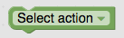
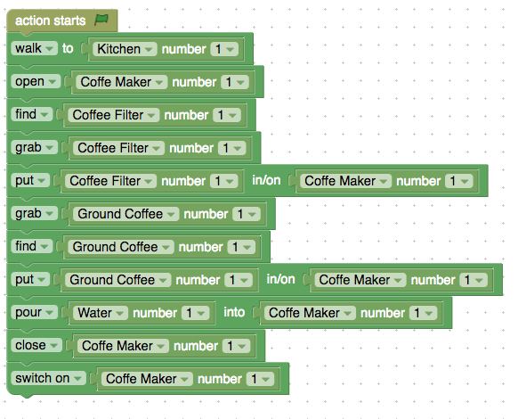

If any of these steps are missing, the robot will not be able to execute the task correctly.
Read the name of the task to execute. The name will be general, but you need to implement it in your script with as much detail as possible . Click on the task name to open the editor for your script.
Write a description of how to perform the given task. Write the description with as much detail as possible but make it sound natural, as if you were telling a friend how to do it. For example if the task is Doing homework, you could write something like:
I walk to the kitchen and find the coffee maker. I open the coffee maker. I grab a coffee filter and put it in the coffe maker. I find ground coffee, grab it and put it into the coffee filter. I put water into the coffee maker and close it. I switch the coffee maker on and wait.
Add the rooms and objects that will be involved in the task you are implementing. To do so, click on Add Room/Add Prop and select name of the object or room you need. You can write the name to select faster.
After entering the object, select the number of objects of that type that you will need, for example 3 cups, instead of one. If you chose 3 cups, the room will contain three cups, numbered 1 to 3. When you write the code, always tell which object the robot should be interacting with, whether the first cup (number 1), the second cup (number 2) or the third cup (number 3).
Your code will be directly translated into robot code and executed on a robotic platform. So for example, if you start the action with "grab cup", the robot will be lost. You first need to make sure to bring the robot to the cup. You can do this by using the command "find cup number 1". This will make the robot go around the room until it finds the first cup that you placed in the scene.
- Click and drag the green block in the left into the canvas. 
- Click on Select action and chose one action from the list. Some actions are not shown until you enter the needed props.
- Stack your blocks of actions to generate the script. Connect the first block after
 , then second block to the first block and so on. If you want to delete a block, drag and drop it into the trash bin.
, then second block to the first block and so on. If you want to delete a block, drag and drop it into the trash bin. - When you are done writing your script, click submit. If you believe some actions are missing write it in the feedback field. Below is one example of how a script could look like. 